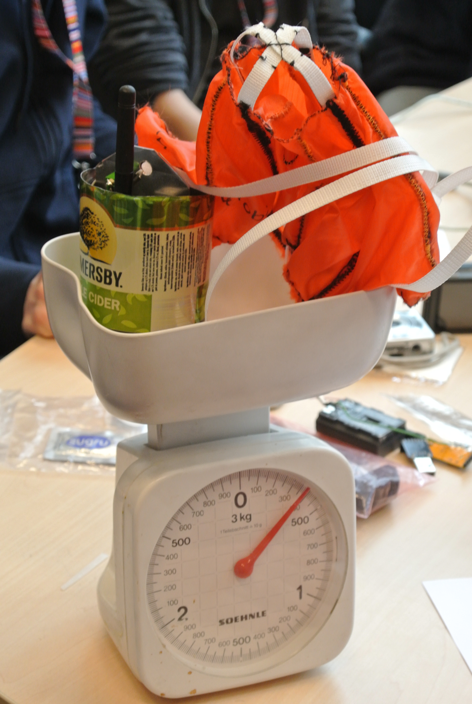

CanSat: observar una misión científica del docente
Reconocer sensores, registro y transmisión y preparar una observación de datos del demostrador docente.
Qué es un CanSat y qué haremos nosotros
Un CanSat es una simulación educativa de funciones de satélite integrada en un volumen reducido. Puede medir variables, registrarlas y transmitir datos durante una actividad. No se convierte en satélite orbital por llevar sensores ni por ser transportado en un cohete. Su valor educativo está en completar una misión de medición y poder interpretar sus datos.

En este curso el CanSat pertenece al vehículo y al equipo docente. El alumnado observa la preparación, la cadena de datos y el análisis. Su proyecto sigue siendo el cohete pequeño que construyó. Así se presenta una aplicación científica sin transformar todas las piezas del curso en un problema de integración electrónica. [ESA]
Un CanSat reproduce algunas funciones de un satélite en un volumen pequeño: medir, registrar y comunicar datos. La misión decide qué variable se observa y qué pregunta se intenta responder. Presión y temperatura son ejemplos habituales, pero disponer de sensores no basta para formar una misión científica. Hace falta relacionar la variable, el instante y el origen del registro con una pregunta. En este curso el equipo docente aporta el demostrador y los alumnos aprenden a interpretar esa cadena.
La cadena de una observación
Qué hace cada parte
| Parte | Función | Pregunta para el banco |
|---|---|---|
| Sensor | Obtener una variable física | ¿Qué mide y en qué unidad? |
| Procesador | Organizar la lectura | ¿Conserva identificador y tiempo? |
| Almacenamiento | Guardar un registro | ¿Podemos abrirlo después? |
| Transmisión | Enviar información | ¿Qué recibió realmente tierra? |
| Estación | Mostrar y conservar datos | ¿Se distingue dato perdido de dato válido? |
La frecuencia de adquisición y la de transmisión pueden ser diferentes. Un sistema puede guardar más datos de los que envía o transmitir una selección. Por eso “se vio una cifra en pantalla” no demuestra que se haya conservado todo el registro. El docente mostrará una prueba de principio a fin en banco.
Una lectura desaparece en la pantalla
El archivo local conserva todas las muestras, pero en tierra falta un identificador.
Razonamiento del caso
Hay que estudiar la transmisión o la recepción, no concluir inmediatamente que el sensor dejó de medir. Si el archivo local también tiene el hueco, la pregunta cambia.
El alumno debe identificar en qué etapa aparece un problema. Esa idea se conecta con la revisión de piezas del cohete: cada comprobación corresponde a una función.
Sensor, registro local y recepción en tierra son etapas diferentes. El sensor puede producir una lectura que nunca llegue al archivo. El archivo local puede conservar una muestra que se perdió durante la transmisión. Un mensaje también puede recibirse dos veces. Un identificador de muestra permite reconocer esas situaciones sin depender solo del orden de las líneas. Esta idea se puede practicar en el aula con un conjunto sintético antes de observar una demostración real.
Datos que se puedan reconocer después
Un registro sencillo
| Campo | Unidad o tipo | Para qué sirve |
|---|---|---|
| equipo | Texto | Identificar el sistema |
| muestra | Entero | Detectar saltos y duplicados |
| tiempo_s | s desde un origen | Ordenar las lecturas |
| presion_Pa | Pa | Conservar variable y unidad |
| temperatura_C | °C | Interpretar el estado medido |
El tiempo necesita un origen: inicio de registro, encendido o una referencia declarada. Una temperatura en grados Celsius no puede usarse como si fueran kelvin en cualquier fórmula. En esta introducción no calcularemos una atmósfera completa; comprobaremos que las unidades y el significado del registro sean claros.
No usar cero para todo
El sensor no entregó una lectura y el archivo guarda presión igual a cero, sin otra indicación.
Razonamiento del caso
Cero puede interpretarse como un valor físico. Se necesita una marca explícita de lectura no válida. Conservar la diferencia entre ausencia y dato evita gráficas engañosas.
El conjunto CSV de esta entrega es sintético y corresponde a un ejercicio de banco. No contiene un vuelo de MECRO. Se usa para practicar lectura de columnas e identificación de muestras.
Una misión de presión y temperatura puede servir para observar cambios del ambiente y discutir cómo responde un sensor. La presión puede relacionarse con altura mediante un modelo atmosférico, pero ese modelo y su referencia requieren explicación propia. En este bloque introductorio se conservan primero las variables originales. No se transforma una columna en metros sin saber qué hipótesis y qué origen utilizó el programa.
Práctica de banco y lectura del archivo
- El docente presenta su sistema y explica qué variable está observando.
- Inicia una adquisición de banco y conserva una referencia de tiempo.
- Muestra una pantalla de recepción y un archivo local identificado.
- El equipo abre cansat_banco_sintetico.csv y lee sus columnas y unidades.
- Busca identificadores repetidos o ausentes en recepcion_banco_sintetica.csv.
- Explica qué dato adicional permitiría atribuir un hueco a adquisición, almacenamiento o transmisión.
En la demostración real se conservan configuración, sensor y fuente de datos. El archivo sintético permite aprender el método aunque el banco se organice para toda la clase con una sola unidad. Si no se ha realizado una medición real, el informe lo indica.
Qué registrar durante la demostración
| Momento | Observación |
|---|---|
| Antes | Identificación y archivo vacío o nuevo |
| Durante | Variable y referencia temporal |
| Después | Archivo que se puede abrir |
| Recepción | Muestras únicas, huecos y duplicados |
Un CSV es texto organizado en filas y campos. La primera fila puede nombrar las columnas; las siguientes contienen registros. Al importarlo, hay que comprobar el separador y cómo se interpretan los decimales para que una presión no se convierta en texto o en dos campos. El alumno verifica primero un registro conocido y sus unidades. Luego puede ordenar por identificador, reconocer repeticiones y describir huecos con una evidencia visible.
Contar recepción sin confundir mensajes y muestras
Un mismo dato puede recibirse más de una vez. Para saber cuántas observaciones llegaron se usa el identificador de muestra, no únicamente el número de mensajes. Esta diferencia se puede estudiar con pocas filas y una cuenta sencilla.
Ejercicio sintético de recepción
Se generaron 20 muestras. En tierra faltan las muestras 7 y 14 y la muestra 3 llegó dos veces.
Razonamiento del caso
Hay 19 mensajes recibidos, pero solo 18 muestras únicas. La recepción de observaciones es 18/20 = 90%. Contar los 19 mensajes como 19 datos diferentes escondería un duplicado.
Cuatro cantidades distintas
| Cantidad | Valor del ejercicio |
|---|---|
| Muestras generadas | 20 |
| Muestras únicas recibidas | 18 |
| Mensajes recibidos | 19 |
| Muestras ausentes | 2 |
Esta cuenta no prueba una cobertura de radio ni una exactitud del sensor. Describe el archivo de ejercicio. El alumno aprende a explicar el denominador y a relacionar la cifra con una pregunta concreta.
Un porcentaje global de recepción puede ocultar cuándo faltaron las muestras. Dos huecos aislados y un bloque continuo pueden tener el mismo número de pérdidas y una utilidad distinta para observar un evento. El equipo señala los identificadores y los tiempos de los huecos. Así la cuenta de 90% se convierte en una descripción del registro, sin prometer que se capturó cualquier fenómeno de interés.
Qué observar en la jornada docente
Plan de observación CanSat
| Pregunta | Evidencia que podría responderla |
|---|---|
| ¿El sistema registró? | Archivo local identificado |
| ¿Qué llegó a tierra? | Registro de recepción |
| ¿Cuándo ocurrió un evento? | Referencia de tiempo y observación |
| ¿Qué se recuperó? | Estado físico y datos disponibles |
La demostración se realiza únicamente en el vehículo docente revisado para esa misión. La comparación de narices y cuerpos con espacio para carga pertenece a esa configuración, no al modelo del alumno. El equipo prepara preguntas y un registro de observación sin intervenir en la operación que corresponde al responsable.
Un dato que no apareció en tierra
Durante la actividad falta una parte de la telemetría.
Razonamiento del caso
El primer informe registra el hueco y conserva los archivos. Después compara con el registro local y la observación del evento. No concluye “se apagó” si no existe evidencia de alimentación o estado del sistema.
Entrega un mapa de la cadena de datos, la cuenta del ejercicio y un plan de observación. El interés de la misión científica se sostiene en poder explicar qué se midió y qué se sabe después de recuperar el sistema.
Preguntas de cierre
¿Un CanSat es automáticamente un satélite orbital?
No. Es una simulación educativa de funciones de satélite.
¿19 mensajes implican 19 muestras únicas?
No si hay duplicados.
¿Un hueco de telemetría demuestra apagado?
No. Hace falta evidencia adicional.
Entrega
Mapa de datos, análisis del CSV y plan de observación.
Bibliografía y procedencia
[ESA] European Space Agency. What is a CanSat?.
[OR1] OpenRocket. Basic Rocket Design.
[FL] NASA Glenn. Flight of a Model Rocket.